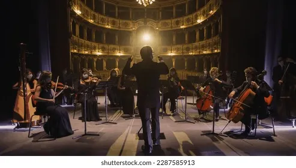
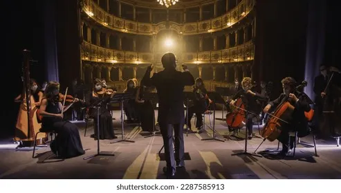
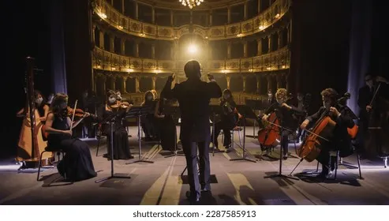
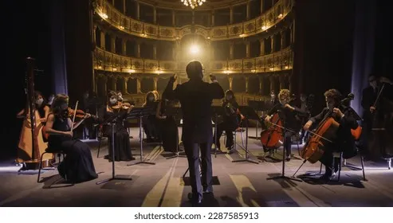

L'Opéra du Caire, officiellement connu sous le nom de Centre Culturel National, est le principal lieu de représentation des arts de la scène en Égypte. Situé sur l'île de Gezira, ce complexe culturel moderne abrite une salle d'opéra, des salles de concert et des espaces d'exposition.
Le bâtiment actuel, inauguré en 1988, a été construit avec l'aide du gouvernement japonais après l'incendie qui détruisit l'ancien opéra historique en 1971. Son architecture contemporaine intègre des éléments islamiques traditionnels avec des lignes modernes.
L'Opéra accueille chaque année des centaines de représentations : opéras, ballets, concerts symphoniques, pièces de théâtre et festivals internationaux, faisant de lui le cœur culturel de la capitale égyptienne.
Le premier Opéra du Caire fut construit en 1869 pour célébrer l'inauguration du Canal de Suez. Conçu par les architectes italiens Avoscani et Rossi, il accueillit la première représentation de l'opéra Aïda de Verdi en 1871.
Après plus d'un siècle d'activité culturelle intense, l'ancien opéra fut entièrement détruit par un incendie en 1971. Le nouveau complexe, construit grâce à un don japonais, fut inauguré 17 ans plus tard et comprend désormais plusieurs salles de spectacle et un musée.
L'Opéra du Caire joue aujourd'hui un rôle central dans la vie culturelle égyptienne et sert de pont entre les traditions artistiques orientales et occidentales.